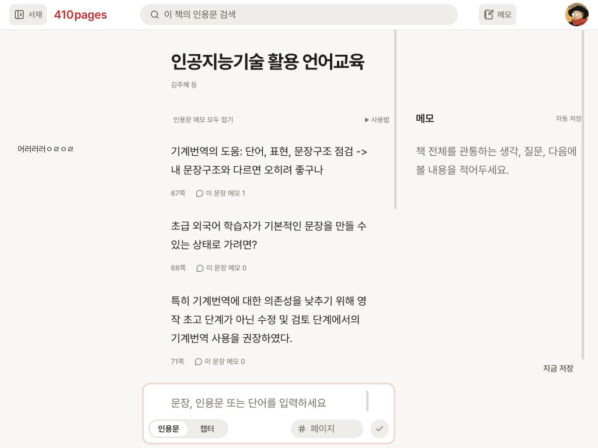
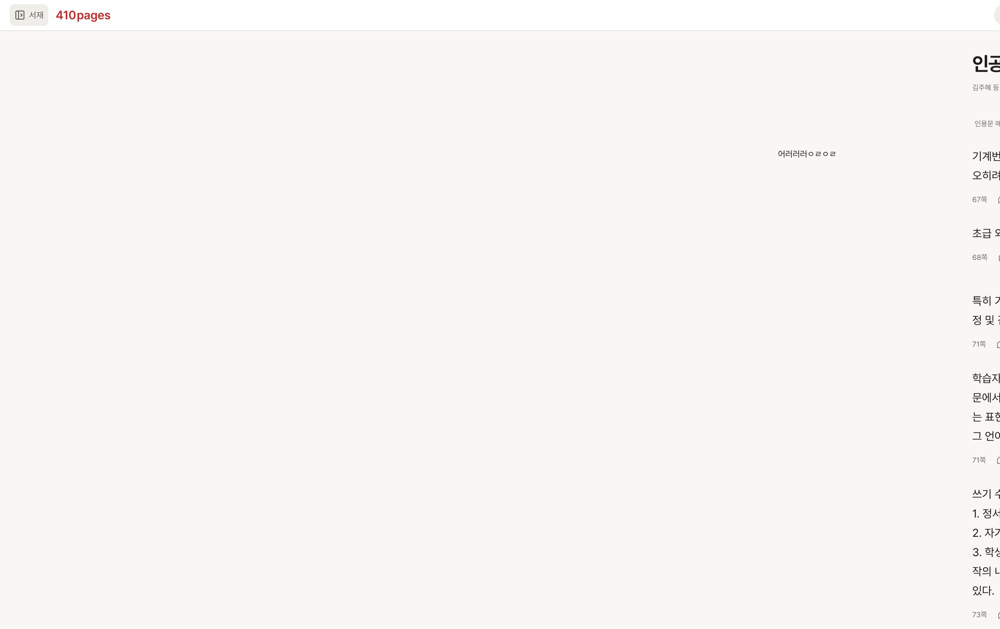

댓글 — 인용문 — 메모를 하나의 읽기 화면으로 구현
데스크톱 책 화면에서 세 열을 같은 읽기 묶음으로 배치했습니다. 제목과 인용문의 시작선을 맞추고, 메모 열은 책 화면 상단에서 자연스럽게 시작합니다. 메모는 긴 글처럼 독립 스크롤하며 접어도 편집 상태를 유지합니다.
제품 구현세 열 연결·공간 계산·책별 위치 복원 반영
실제 화면375px·1024·1440·1920·4K 확인
자동 검사82개 파일·575개 테스트 통과
실제 화면과 같은 경로로 직접 확인
아래 예제는 제품의 MainLayout·ArchiveScreen·BookMemoPanel을 그대로 사용합니다. 책·인용문·저장은 예제 전용 상태와 로컬 콜백만 사용하며 실제 계정이나 백엔드를 수정하지 않습니다.
이전 구현 단계 화면 캡처


결정과 구현
| 사용자 결정 | 데스크톱 책 화면을 왼쪽 댓글, 가운데 인용문, 오른쪽 메모의 세 열로 구성. 보이는 글 영역은 1:2:1로 두고 제목·본문을 화면 전체 중앙에 정렬. 메모 열은 자연스러운 상단에서 시작하며, 접기·펼치기 버튼은 메모 헤더 오른쪽 끝에 유지. |
|---|---|
| Codex 구현 판단 | 세 열의 보이는 글 영역을 기준으로 1:2:1을 계산하고, 댓글·인용문 사이와 인용문·메모 사이의 글자 간격을 맞춥니다. 메모를 접어도 헤더·버튼과 편집 DOM·스크롤 상태를 유지합니다. 1024px에서는 서재를 자동으로 접어 읽기 공간을 확보합니다. |
| 기존 동작 유지 | 책별 단일 메모, 800ms 자동 저장, 실패 재시도·복구 초안 저장, 계정·책별 초안 복구와 저장 직렬화, 댓글 CRUD·전체 펼치기, 메모 접기 중 편집기 유지, 메모·서재 폭 조절, 챕터/인용문 입력·계층·페이지·저장 후 이어 쓰기, Day/Night, 모바일 하단 시트 구조. 평상시의 `자동 저장` 문구와 `지금 저장` 버튼·빈 푸터는 제거했습니다. |
| 저장 범위 | 저장 모델·DB/API·인증은 변경하지 않았습니다. 실제 계정 화면은 기하·스크롤·접기만 읽기 확인했고 데이터를 수정하지 않았습니다. 아래 fixture의 저장은 로컬 콜백과 예제 전용 브라우저 초안만 사용합니다. |
확인한 사실
- 최종 1024px 비율: 보이는 댓글·본문·메모 폭은 202/404/202px로 25/50/25%입니다. 제목·본문 중심은 화면 중심 512px과 일치하며 양쪽 글자 간격은 78/78px입니다.
- 4K 현재 단계: 보이는 댓글·본문·메모 폭은 250/500/250px로 1:2:1입니다. 광폭 화면의 글자·행 길이·여백 통합 확대는 다음 턴 계획으로 분리했습니다.
- 독립 스크롤: 빈 메모를 내리면 메모 영역 top=51.3984px까지 올라갔고 인용문 스크롤은 움직이지 않았습니다.
- 접기: 메모를 접어도 입력 요소는 mounted 상태이고 인용문 x 좌표는 바뀌지 않았습니다.
- 중간 폭: 실제 앱의 1440px·1920px 화면에서 가로 overflow가 없음을 확인했습니다.
- 모바일 유지: 375px에서 메모는 폭 375px의 기존 dialog로 열렸고 제목은 `메모`, 읽기 열 변형은 적용되지 않았습니다. 닫기, 인용문 입력 가능 상태, 가로 overflow 없음도 확인했습니다.
- 긴 메모: 14pt(18.6667px) 높이 1573px, 18pt(24px) 높이 2518px에서 잘림을 보지 못했습니다. 24px 긴 메모의 실제 끝(caret 791/length 791)에 네이티브 입력으로 12자를 추가한 뒤 caret 803/length 803과 끝 문구를 확인했고, 바깥 메모 scrollTop은 2264로 유지됐습니다.
- 책별 위치 복원: 격리 fixture의 24px 긴 메모 A를 scrollTop 1500까지 내린 뒤 짧은 메모 B(31자, scrollTop 0)로 갔다가 A로 돌아오면 scrollTop 1500과 높이 2518px가 복원됐습니다.
- Night·폭 조절: Night에서도 가로 overflow 없이 메모 위치 1500을 유지했습니다. 메모 구분선을 키보드로 360→376→360px 조절한 뒤 원래 폭으로 복원했습니다.
- 예제 저장: 로컬 실패 상태에서 내용 보존과 재시도를 확인했습니다. 실제 백엔드 저장 검증은 아닙니다.
- 독립 검토에서 메모 글자 크기 수정 뒤 남은 확정 결함은 보고되지 않았습니다.
검증 수준과 남은 한계
| 자동 검사 | 현재 확정된 폭 상한·1:2:1 구현을 포함한 코드에서 82개 파일·575개 테스트가 maxWorkers=2로 71.37초에 통과했습니다. 관련 집중 검사 27개, 타입 검사, production build와 diff 검사도 통과했습니다. |
|---|---|
| 브라우저 | 실제 계정 앱의 375px·1024×768·1440·1920·4K에서는 데이터를 수정하지 않고 모바일 유지, 열 배치, overflow, 시작점, 독립 스크롤과 접기를 확인했습니다. 격리 fixture에서는 긴 메모 끝 입력·스크롤 유지, Day/Night, 14/18pt, 로컬 저장 실패·재시도와 A 긴 메모/B 짧은 메모 전환을 확인할 수 있습니다. |
| 미검증 | 다른 브라우저·물리 디스플레이, 실제 계정의 메모 쓰기/저장, 장기간 작성 편의, 운영 배포 효과는 확인하지 않았습니다. |
| 권한 경계 | 구현 검토 후 사용자가 현재 작업 브랜치의 커밋·푸시를 승인했습니다. 운영 배포는 이번 범위에 포함하지 않습니다. |
확정 정책은 위 ‘결정과 구현’ 표에 요약했습니다. 과거 고정 오른쪽 패널·공간 부족 시 메모 자동 닫기 규칙은 이력으로 보존하고, 이번 세 열 읽기 묶음·서재 우선 자동 접기 규칙이 대체합니다.